第05讲 解题技巧专题：与绝对值的有关的化简
第05讲 解题技巧专题：与绝对值的有关的化简
(7类热点题型讲练)

目录
【题型一 已知参数的范围化简绝对值】 1
【题型二 利用绝对值非负性进行求解】 2
【题型三 化简含绝对值的多重符号】 4
【题型四 利用点在数轴上的位置化简绝对值】 6
【题型五 利用绝对值的定义求解绝对值方程】 9
【题型六 利用绝对值的性质分类讨论】 12
【题型七 利用绝对值的几何意义化简绝对值】 16

【题型一 已知参数的范围化简绝对值】
例题：（23-24七年级上·海南省直辖县级单位·期中）若 ，则化简
，则化简 ．
．
【变式训练】
1．（2023七年级上·福建·专题练习）若 ，则
，则 ；当
；当 时，
时， ．
．
2．（23-24七年级下·湖北孝感·阶段练习）若 ，则
，则
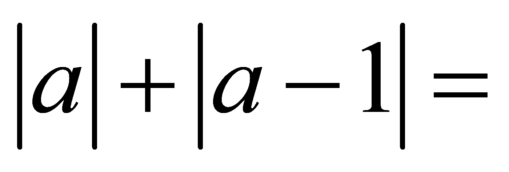
．3．（23-24七年级上·广东梅州·期中）若
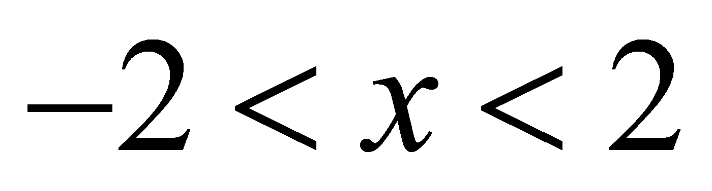
，则 ．
．4．（23-24七年级上·四川南充·阶段练习）若 ，求代数式
，求代数式 ．
．
【题型二 利用绝对值非负性进行求解】
例题：（23-24六年级下·全国·假期作业）若 ，则
，则 ，
， ．
．
【变式训练】
1．（23-24六年级下·黑龙江哈尔滨·期中）若 与
与 互为相反数，则
互为相反数，则
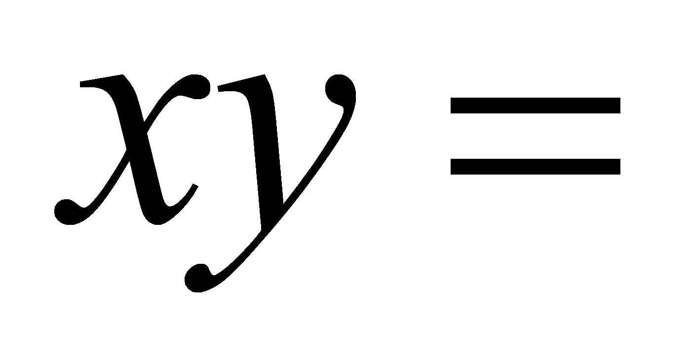
．2．（23-24六年级下·黑龙江哈尔滨·期中）已知 为有理数，则
为有理数，则
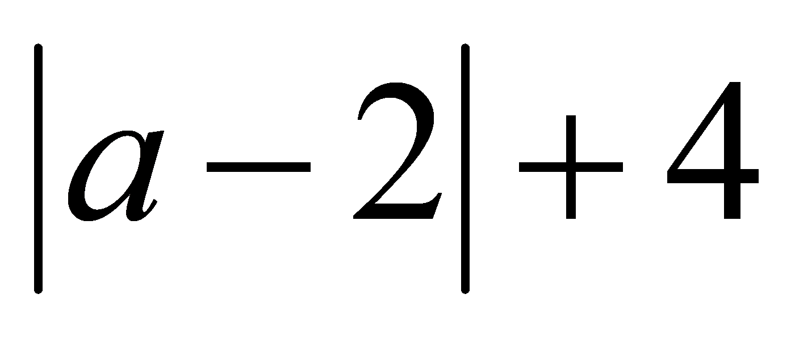
的最小值为 ．3．（23-24七年级上·四川内江·期中）当 时，代数式
时，代数式
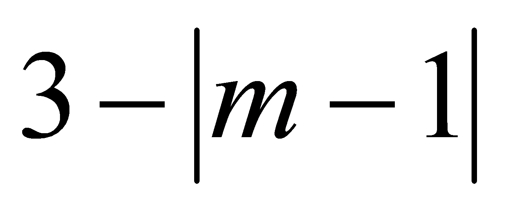
有最大值为 ．4．（23-24七年级上·江苏无锡·期中）已知a，b，c均为整数，且
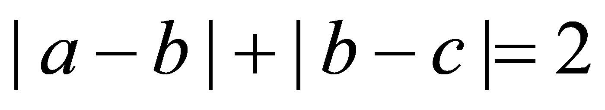
，那么 的值 ．
的值 ．【题型三 化简含绝对值的多重符号】
例题：（22-23七年级上·福建泉州·阶段练习）化简：
（1）
（2）
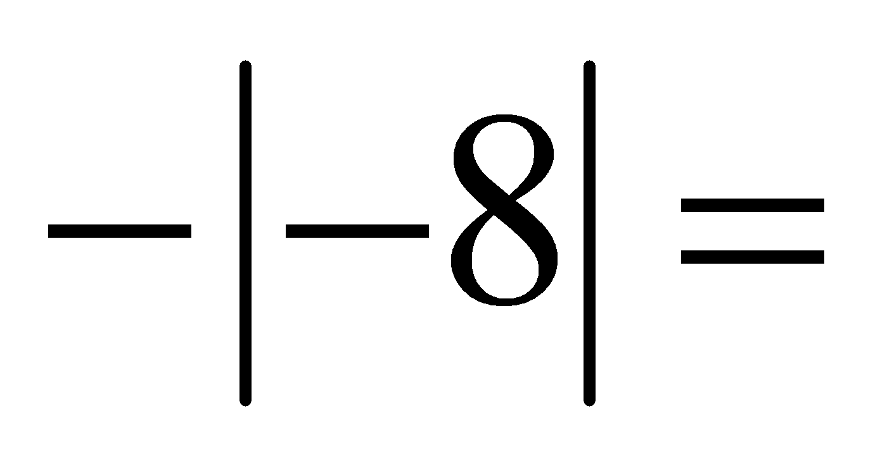
．【变式训练】
1．（23-24七年级上·江苏南京·阶段练习）化简：
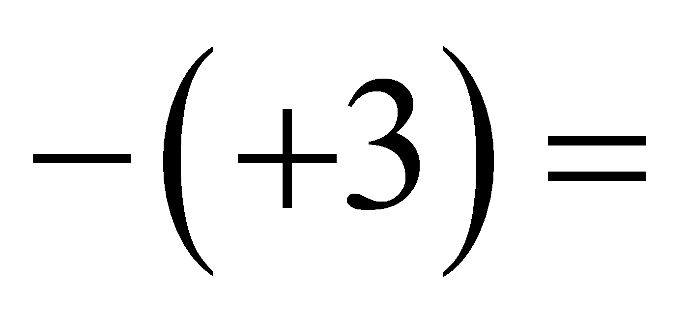
， ．
．2．（22-23七年级上·河北邢台·阶段练习）用“＞”“＜”“＝”号填空：
（1）
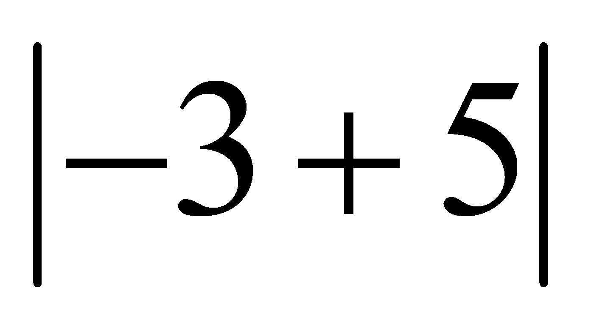
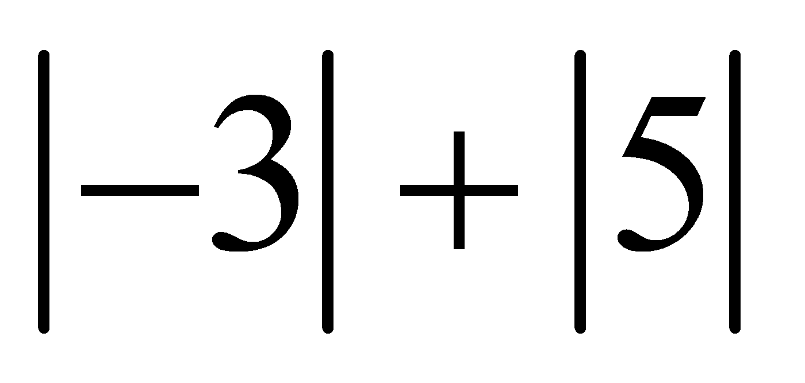
；（2）
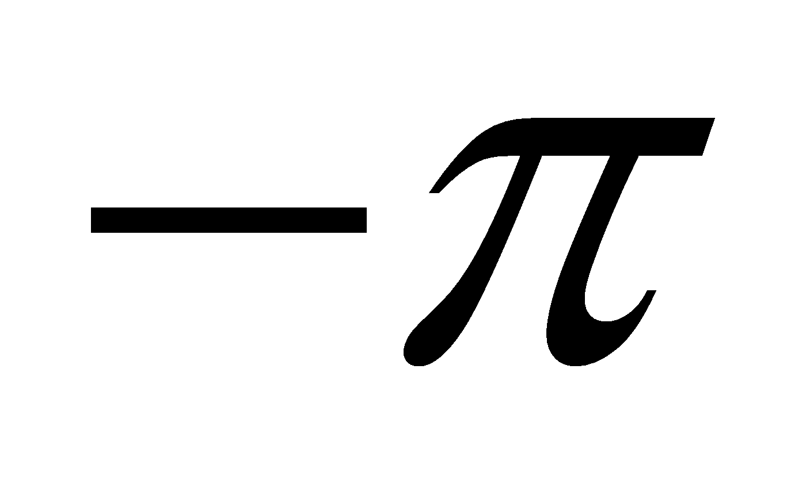
 ；
；（3）
 ．
．
3．（23-24七年级下·山东潍坊·阶段练习）若 ，则 ；若
，则 ；若 ，则 ．
，则 ．
4．（23-24七年级上·河南濮阳·期中）有理数 中，负整数是 ，非负数是 ．
中，负整数是 ，非负数是 ．
【题型四 利用点在数轴上的位置化简绝对值】
例题：（24-25七年级上·全国·随堂练习）在数轴上，a，b，c对应的数如图所示， ．
．
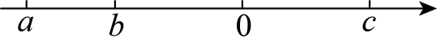
(1)确定符号：a______0，b______0，c_____0， _____0，
_____0， ______0；
______0；
(2)化简： ；
；
(3)化简： ．
．
【变式训练】
1．（23-24七年级上·江苏·周测）有理数a、b、c在数轴上位置如图，求 的值．
的值．
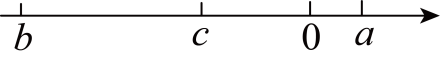
2．（23-24七年级上·贵州毕节·阶段练习）已知有理数a，b，c在数轴上对应点的位置如图所示：
(1) 1，b 2，
1，b 2， ______________2（填“
______________2（填“ ”或“
”或“ ”）
”）
(2)化简：
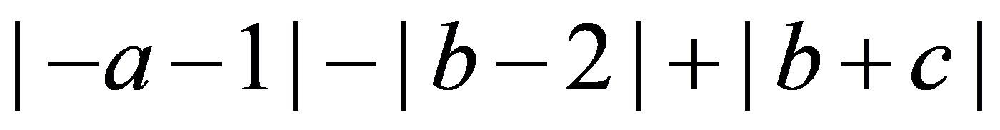
．3．（20-21七年级上·广东阳江·阶段练习）有理数， ，
， 在数轴上的位置如图.
在数轴上的位置如图.

(1)判断正负，用“>”或“<”填空：
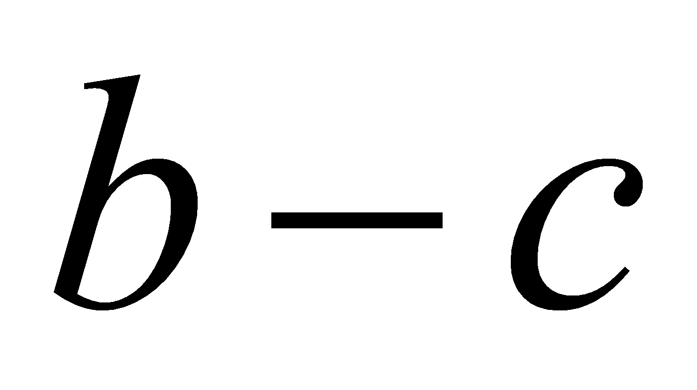
________0， ________，
________， ________0；
________0；(2)化简： .
.
4．（23-24七年级上·湖南常德·期中）有理数a，b，c在数轴上的位置如图所示．

(1)用“”连接：0，a，b，c；
(2)化简代数式： ．
．
【题型五 利用绝对值的定义求解绝对值方程】
例题：（23-24六年级下·上海宝山·期末）已知
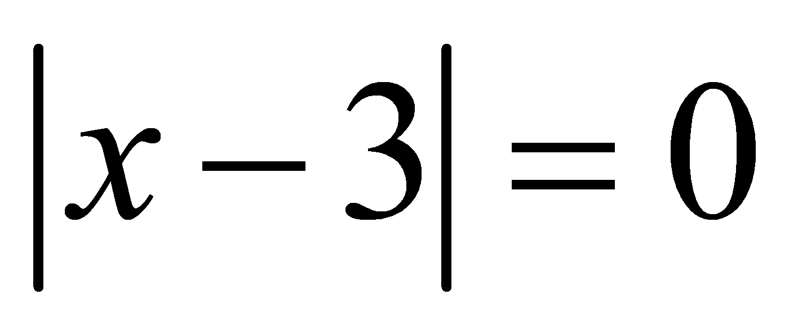
，那么 ．
．【变式训练】
1．（23-24七年级上·河南郑州·阶段练习）已知 ，则x的值为 ．
，则x的值为 ．
2．（22-23七年级上·浙江台州·期末）定义运算
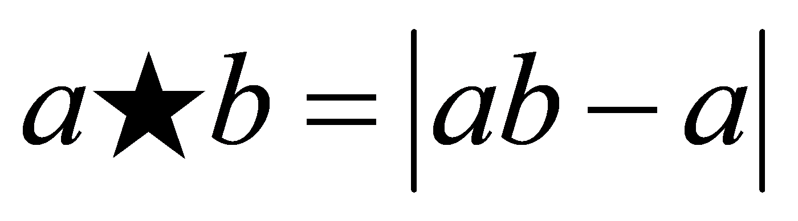
，如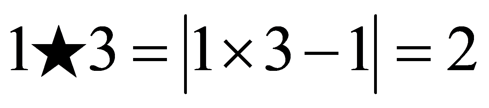
．若 ，且
，且 ，则的值为 ．
，则的值为 ．3．（23-24七年级上·四川自贡·阶段练习）有些含绝对值的方程，可以通过讨论去掉绝对值，转化成一元一次方程求解．
例如：解方程
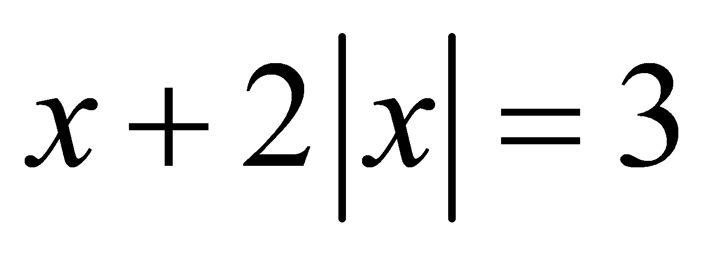
，解：当 时，方程可化为：
时，方程可化为：
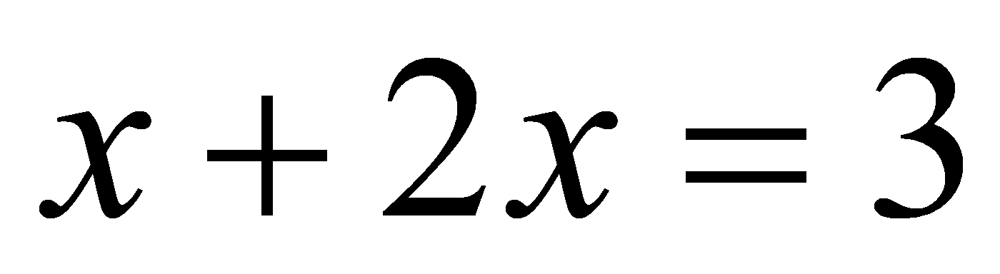
，解得 ，符合题意；
，符合题意；当 时，方程可化为：
时，方程可化为： ，解得
，解得 ，符合题意．
，符合题意．
所以，原方程的解为或．
请根据上述解法，完成以下问题：
解方程： ；
；
4．（23-24七年级上·山西大同·阶段练习）阅读材料：如图， ，
，
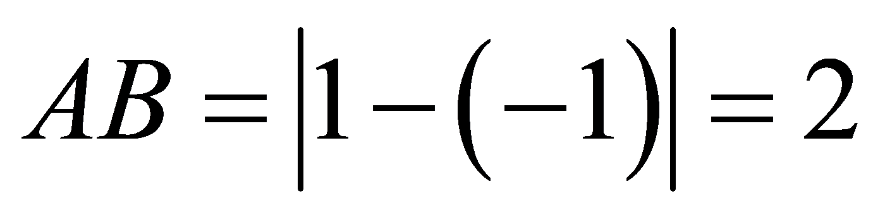
， ，若A、B两点在数轴上分别表示有理数a、b，则
，若A、B两点在数轴上分别表示有理数a、b，则 ．例如，
．例如， 表示5与
表示5与 的差的绝对值，实际上也可理解为5与两数在数轴上所对的两点之间的距离．
的差的绝对值，实际上也可理解为5与两数在数轴上所对的两点之间的距离．根据上述材料，解答下列问题：

(1) ，则______．
，则______．
(2) ，则______．
，则______．
(3) ，则______．
，则______．
(4)式子
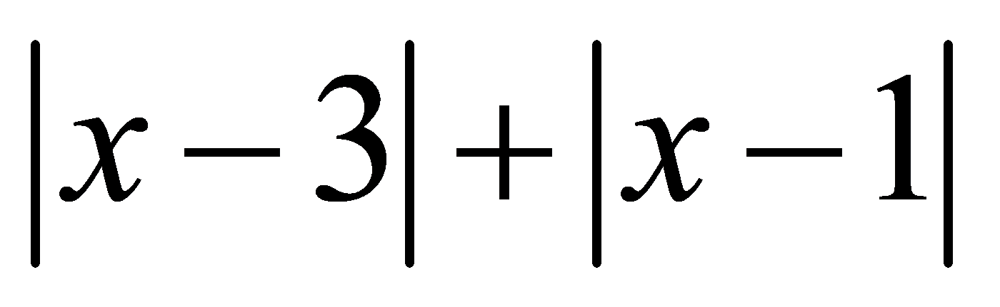
的最小值为______．(5)若
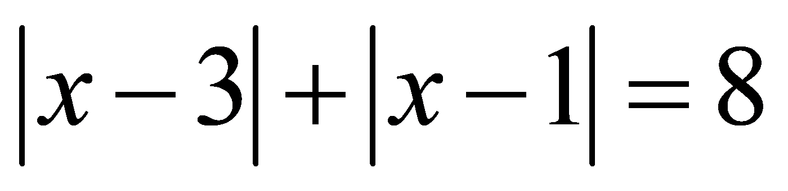
，则______．【题型六 利用绝对值的性质分类讨论】
例题：若 ，则
，则 的值为 ．
的值为 ．
【变式训练】
1．（23-24七年级上·广东佛山·阶段练习）对于有理数x，y，若
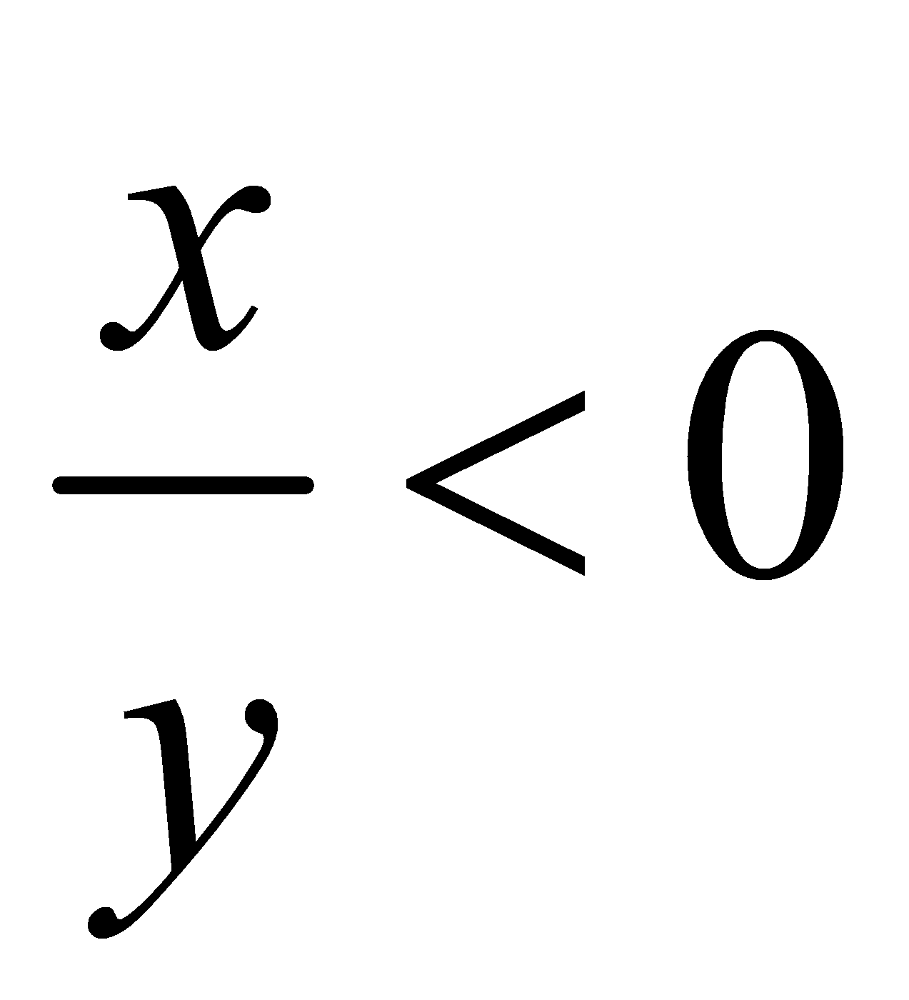
，则 的值是 ．
的值是 ．2．（23-24七年级上·河南新乡·阶段练习）请利用绝对值的性质，解决下面问题:
(1)已知a，b是有理数，当 时，则
时，则 ；当
；当 时，则
时，则 .
.
(2)已知a，b，c是有理数， ，
，
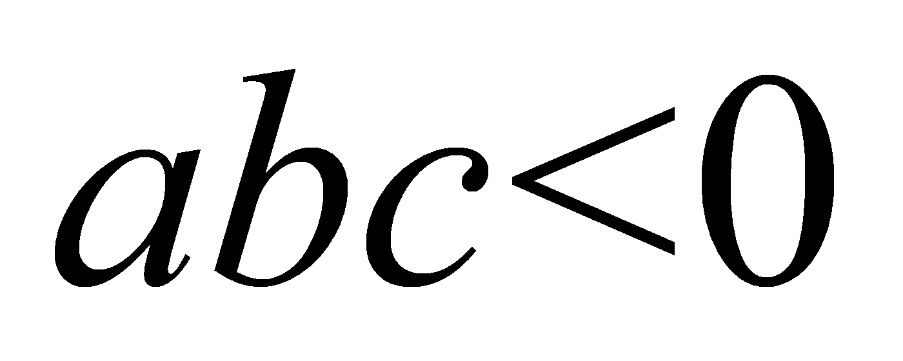
，求 的值.
的值.(3)已知a，b，c是有理数，当 时，求
时，求 的值.
的值.
3．（23-24七年级上·湖北武汉·期中）我们知道数轴上表示数a的点与原点的距离叫做数a的绝对值，利用数轴及绝对值知识结合数形结合．分类讨论思想可以解决一些问题.求解下列问题：
(1)若 时，
时， 的值为___________；
的值为___________；
(2)若
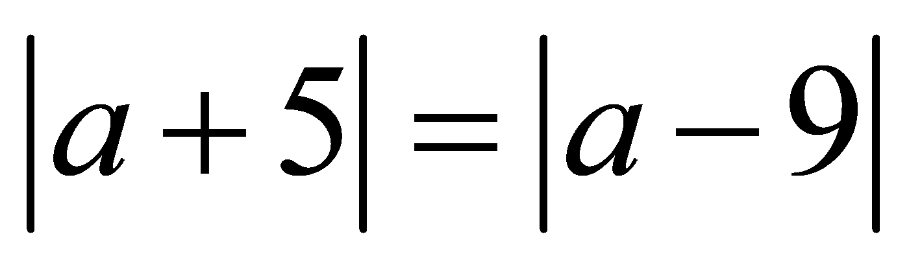
成立，则___________；(3)若 ，则
，则 ___________；
___________；
(4)当式子
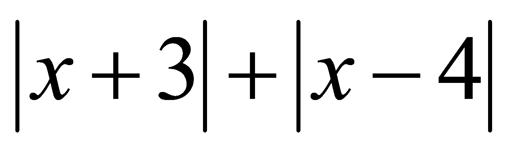
取最小值时，相应的x的取值范围___________，最小值是___________．4．（23-24七年级上·四川内江·阶段练习）数形结合是一种重要的数学方法，如在化简 时，当a在数轴上位于原点的右侧时，
时，当a在数轴上位于原点的右侧时， ；当a在数轴上位于原点时，
；当a在数轴上位于原点时， ；当a在数轴上位于原点的左侧时，
；当a在数轴上位于原点的左侧时， ．当a，b，c三个数在数轴上的位置如图所示，试用这种方法解决下列问题：
．当a，b，c三个数在数轴上的位置如图所示，试用这种方法解决下列问题：
(1)当 时，求
时，求 ，当
，当 时，求
时，求
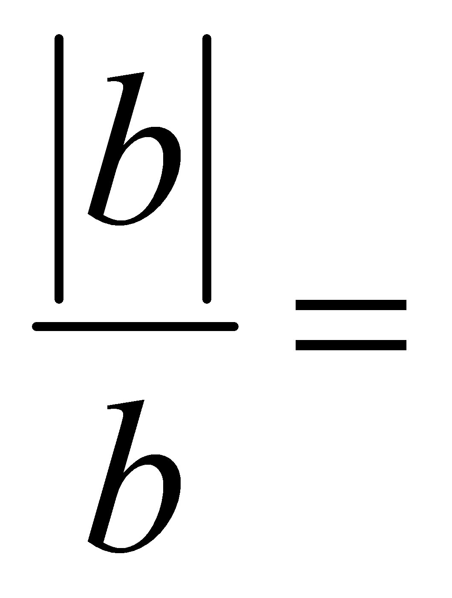
；(2)请根据a，b，c三个数在数轴上的位置，求 的值．
的值．
(3)若有三个均不为零的数n，m，p，求 的值．
的值．
【题型七 利用绝对值的几何意义化简绝对值】
例题：（23-24七年级上·河南新乡·阶段练习）先阅读，后探究相关的问题
【阅读】 表示5与2差的绝对值，也可理解为5与2两数在数轴上所对应的两点之间的距离；
表示5与2差的绝对值，也可理解为5与2两数在数轴上所对应的两点之间的距离； 可以看做
可以看做 ，表示5与
，表示5与 的差的绝对值，也可理解为5与两数在数轴上所对应的两点之间的距离．
的差的绝对值，也可理解为5与两数在数轴上所对应的两点之间的距离．
(1)如图，先在数轴上画出表示点 的相反数的点B，再把点A向左移动
的相反数的点B，再把点A向左移动 个单位，得到点C，则点B和点C表示的数分别为_______和_______，B，C两点间的距离是________；
个单位，得到点C，则点B和点C表示的数分别为_______和_______，B，C两点间的距离是________；
(2)若点A表示的整数为x，则当x为__________时， 与
与 的值相等；
的值相等；
(3)要使代数式 取最小值，相应的x的取值范围是_____________．
取最小值，相应的x的取值范围是_____________．
【变式训练】
1．（23-24七年级下·全国·假期作业）我国著名数学家华罗庚说过“数缺形时少直观，形少数时难入微”，数形结合是解决数学问题的重要思想方法．例如，代数式的几何意义是数轴上x所对应的点与2所对应的点之间的距离：因为
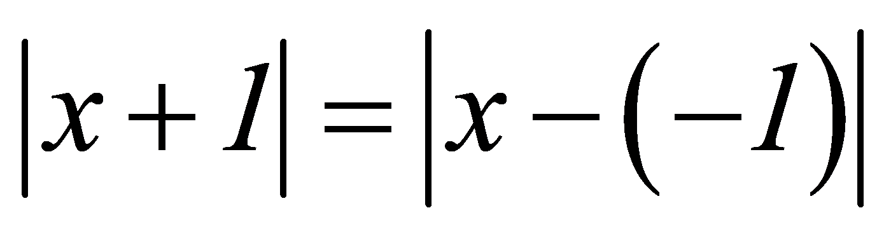
，所以 的几何意义就是数轴上
的几何意义就是数轴上 所对应的点与
所对应的点与 所对应的点之间的距离．
所对应的点之间的距离．（ⅰ）发现问题：代数式的最小值是多少？
（ⅱ）探究问题：如图，点
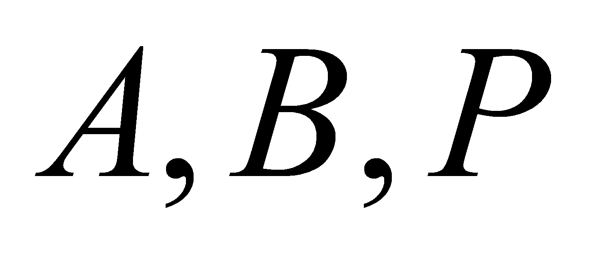
分别表示数 ，
，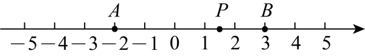
因为的几何意义是线段 与
与 的长度之和，
的长度之和，
所以当点 在线段
在线段 上时，
上时， ；
；
当点在点 的左侧或点
的左侧或点 的右侧时，
的右侧时， ；
；
所以的最小值是 ．
．
请你根据上述自学材料，探究解决下列问题：
（1）
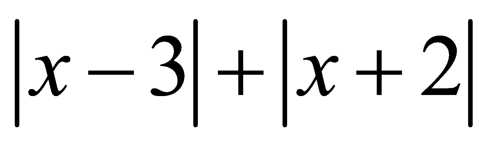
的最小值是______；（2）当为何值时，代数式 的最小值是
的最小值是 ．
．
2．（23-24七年级上·河南洛阳·期中）如图，在数轴上点A表示数a，点B表示数b，点C表示数c，且a，c满足
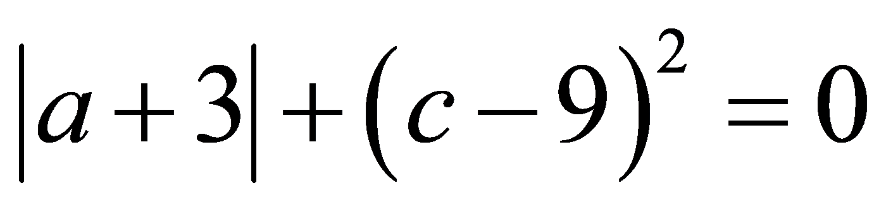
，若点A与点B之间的距离表示为，点B与点C之间的距离表示为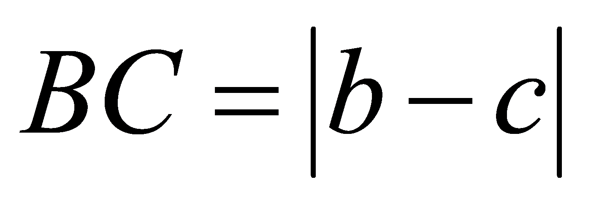
，点B在点A，C之间，且满足 ．
．
(1) ______，
______， ______，
______， ______．
______．
(2)若将数轴折叠，使得点A与点B重合，则点C与数______表示的点重合．
(3)若点P为数轴上一动点，其对应的数为x．
① 的最小值为_____，此时x可以取_____；（写出满足条件的一个数即可）
的最小值为_____，此时x可以取_____；（写出满足条件的一个数即可）
②当代数式
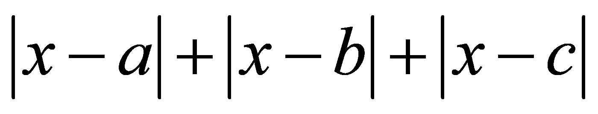
取得最小值时， _____，最小值为_____．
_____，最小值为_____．3．（23-24七年级上·福建漳州·期中）我国著名数学家华罗庚说过“数缺形时少直观，形少数时难入微”，数形结合是解决数学问题的重要思想方法．例如，若表示一个有理数，代数式 的几何意义是数轴上所对应的点与3所对应的点之间的距离：因为
的几何意义是数轴上所对应的点与3所对应的点之间的距离：因为
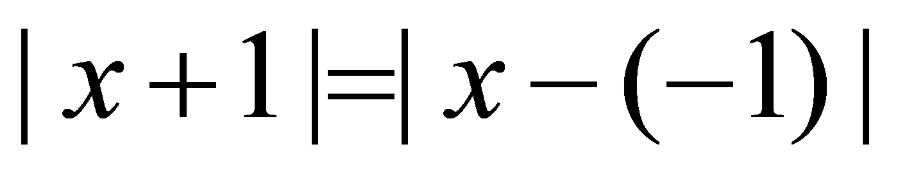
，所以 的几何意义就是数轴上所对应的点与所对应的点之间的距离．
的几何意义就是数轴上所对应的点与所对应的点之间的距离．解决问题：
如图，在单位长度为1的数轴上有 三个点，点
三个点，点 表示的有理数互为相反数
表示的有理数互为相反数
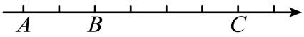
(1)请在数轴上标出原点 ，则点所表示的有理数分别是______，______，______；
，则点所表示的有理数分别是______，______，______；
(2)若
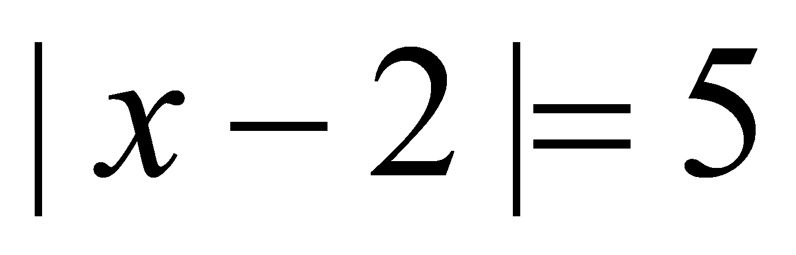
，则______；(3)若点到点、点 的距离之和为10，求点所对应的数；
的距离之和为10，求点所对应的数；
(4)对于任何有理数 是否有最小值，如果有，直接写出最小值，并求出此时能使
是否有最小值，如果有，直接写出最小值，并求出此时能使 取最小值的所有整数的和；如果没有，说明理由
取最小值的所有整数的和；如果没有，说明理由
4．（23-24七年级上·湖北黄石·阶段练习）在数学问题中，我们常用几何方法解决代数问题，借助数形结合的方法使复杂问题简单化．
材料一：我们知道 的几何意义是：数轴上表示数a的点到原点的距离；
的几何意义是：数轴上表示数a的点到原点的距离； 的几何意义是：数轴上表示数a，b的两点之间的距离；
的几何意义是：数轴上表示数a，b的两点之间的距离； 的几何意义是：数轴上表示数a，
的几何意义是：数轴上表示数a， 的两点之间的距离；根据绝对值的几何意义，我们可以求出以下方程的解．
的两点之间的距离；根据绝对值的几何意义，我们可以求出以下方程的解．
（1）
解：由绝对值的几何意义知：在数轴上x表示的点到3的距离等于4，
∴ ，
，
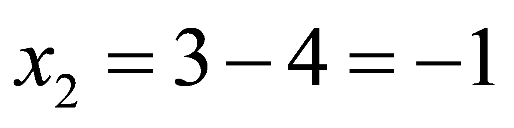
；（2）
解：∵ ，
，
∴其绝对值的几何意义为：在数轴上x表示的点到的距离等于5．
∴ ，
，
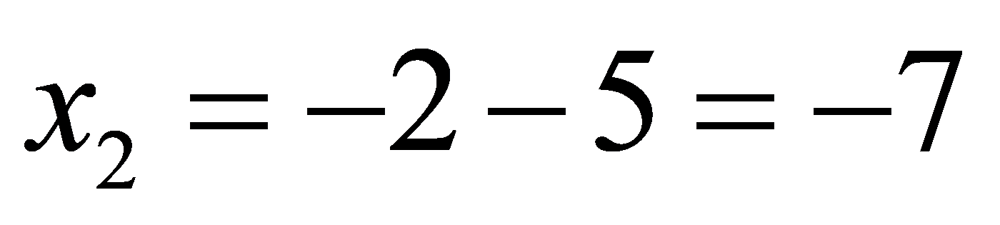
．材料二：如何求 的最小值．
的最小值．
由的几何意义是数轴上表示数x的点到表示数1和两点的距离的和，要使和最小，则表示数x的这点必在和1之间（包括这两个端点）取值．
∴的最小值是3；由此可求解方程 ，把数轴上表示x的点记为点P，由绝对值的几何意义知：当
，把数轴上表示x的点记为点P，由绝对值的几何意义知：当 时，恒有最小值3，所以要使成立，则点P必在的左边或1的右边，且到表示数或1的点的距离均为0.5个单位．
时，恒有最小值3，所以要使成立，则点P必在的左边或1的右边，且到表示数或1的点的距离均为0.5个单位．
故方程的解为：
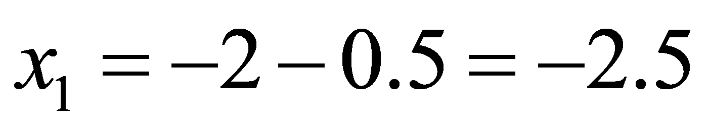
， ．
．阅读以上材料，解决以下问题：
（1）填空： 的最小值为_______；
的最小值为_______；
（2）已知有理数x满足：
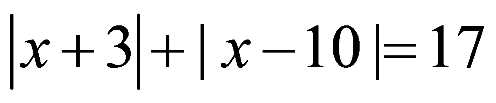
，有理数y使得 的值最小，求
的值最小，求 的值．
的值．（3）试找到符合条件的x，使 的值最小，并求出此时的最小值及x的取值范围．
的值最小，并求出此时的最小值及x的取值范围．